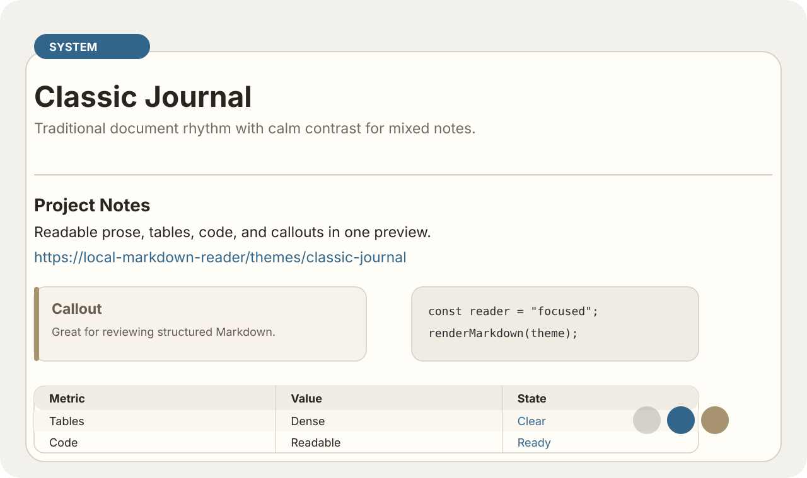
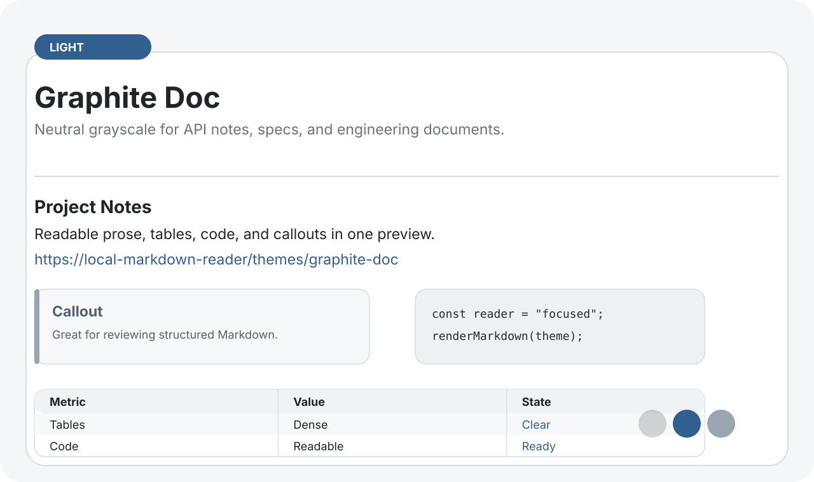
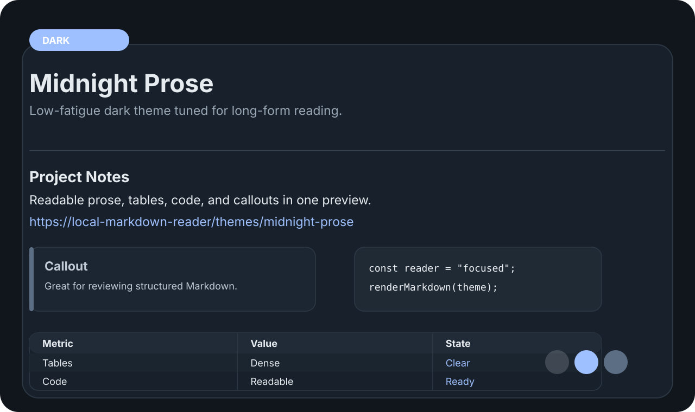
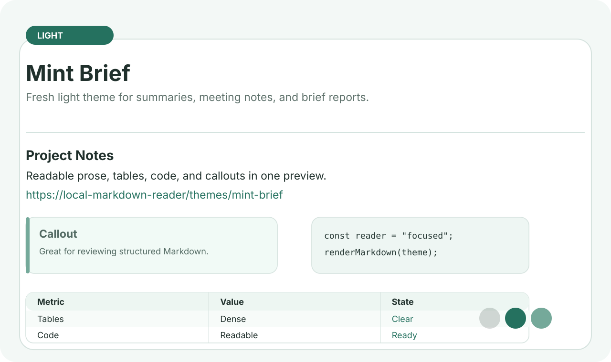
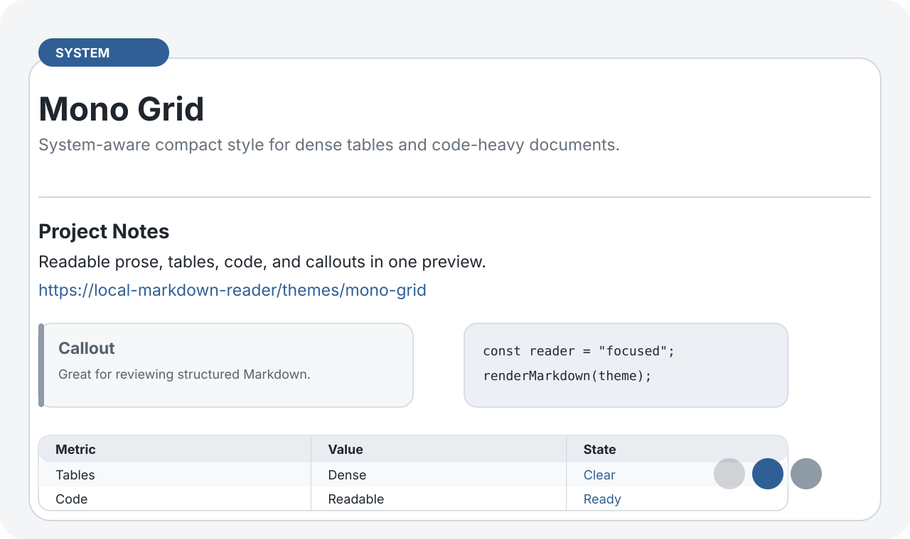
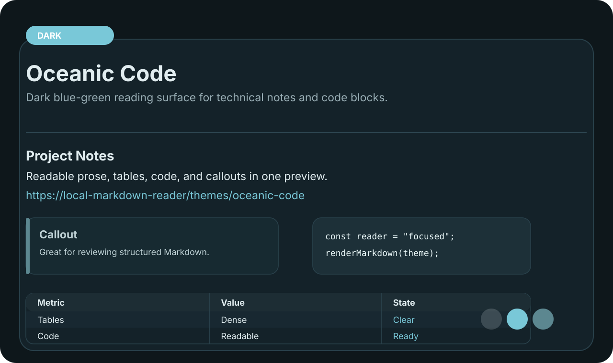
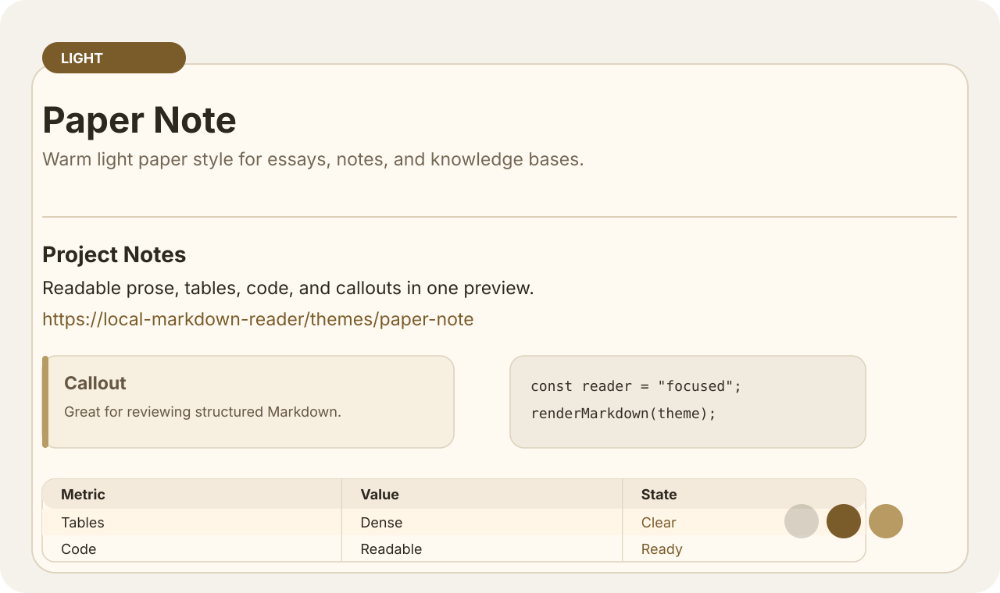
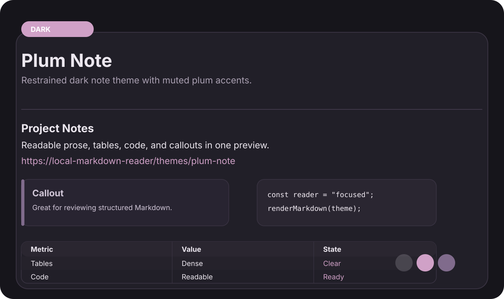
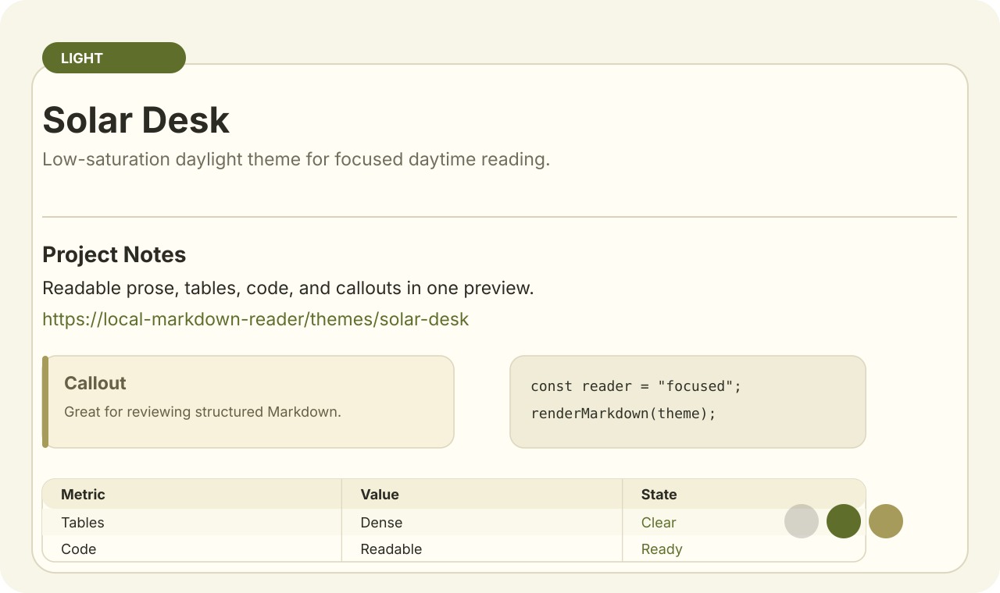
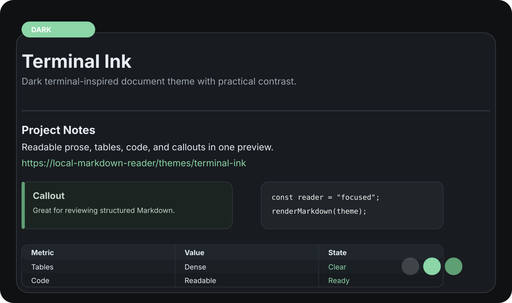

Classic Journal
Traditional document rhythm with calm contrast for mixed notes.
Theme packageGenerated previews for the 10 original remote theme packages introduced in 2.3.1.


Traditional document rhythm with calm contrast for mixed notes.
Theme package
Neutral grayscale for API notes, specs, and engineering documents.
Theme package
Low-fatigue dark theme tuned for long-form reading.
Theme package
Fresh light theme for summaries, meeting notes, and brief reports.
Theme package
System-aware compact style for dense tables and code-heavy documents.
Theme package
Dark blue-green reading surface for technical notes and code blocks.
Theme package
Warm light paper style for essays, notes, and knowledge bases.
Theme package
Restrained dark note theme with muted plum accents.
Theme package
Low-saturation daylight theme for focused daytime reading.
Theme package
Dark terminal-inspired document theme with practical contrast.
Theme package